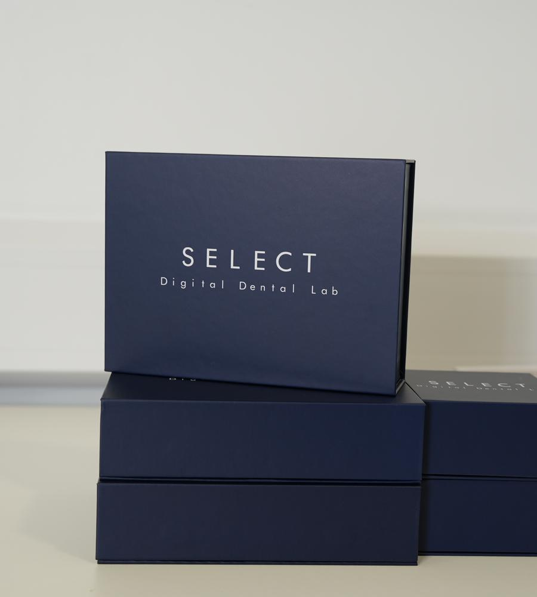
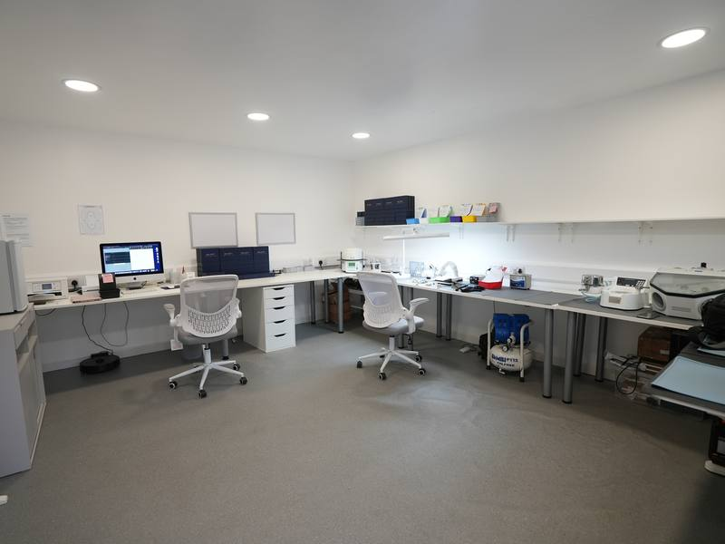
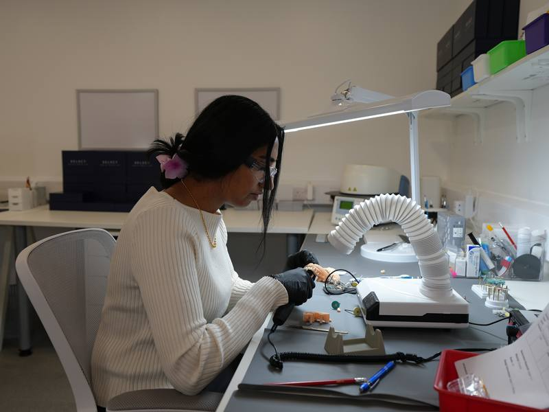
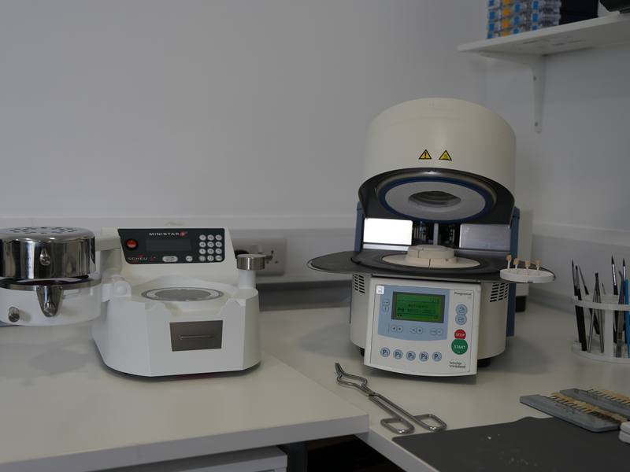
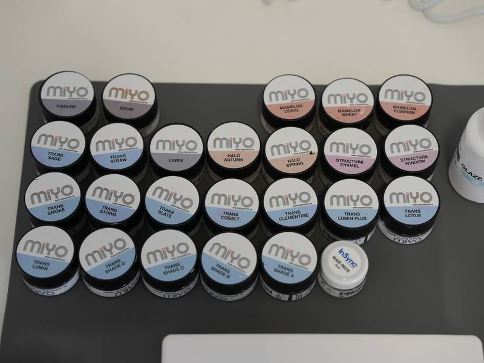
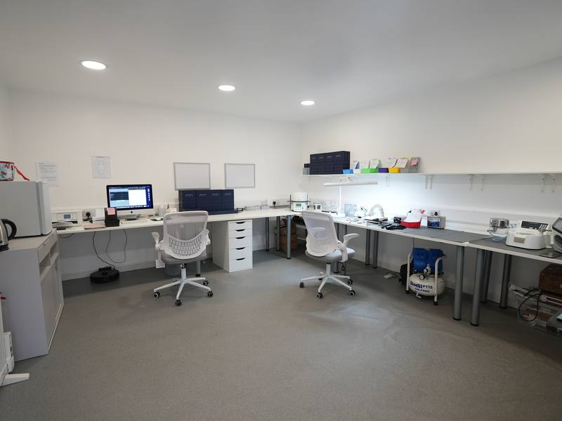
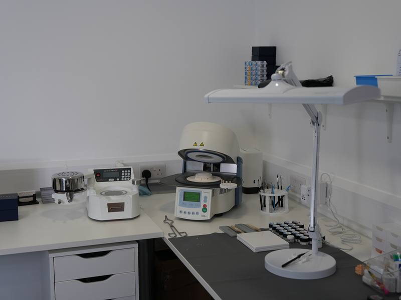
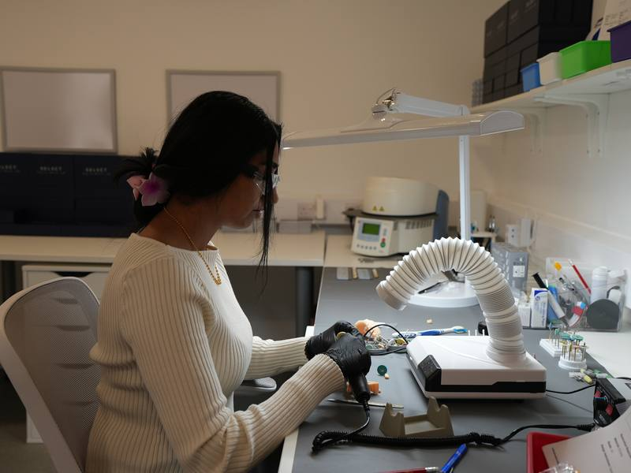
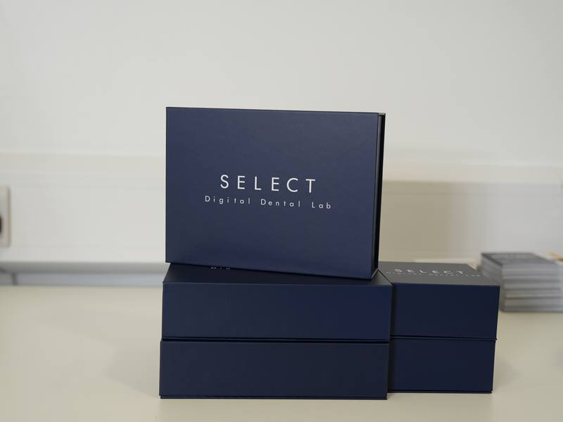

Paying twice for one crown
The remake costs more than the lab fee. It’s another appointment, lost chair time and a conversation you shouldn’t have needed to have.
Dentist-led digital dental lab · Private practices only
Crowns, bridges, veneers and dentures made on a fully digital workflow — and checked by a dentist before they’re approved. Predictable contacts. Predictable occlusion. A margin you can actually rely on.
Limited number of partner practices
Two quick questions, then your details. Takes about 30 seconds, with no obligation.
We’ll be in touch shortly to talk through your cases and how we work.
Sound familiar?
A crown comes back. You go to seat it — and the margin’s open. Now you’re improvising, in front of a patient who trusted you. Another impression. Reschedule them. Lose the chair time. And you still paid for the crown that didn’t fit.
The remake costs more than the lab fee. It’s another appointment, lost chair time and a conversation you shouldn’t have needed to have.
The occlusion. The emergence profile. Why that contact matters. You explain it clearly — and it comes back wrong anyway.
The patient is booked, the case isn’t back, and you’re on the phone to the lab instead of doing the dentistry.
That’s the cycle Select Digital Dental Lab was built to end.
Why digital changes the fit
The moment a conventional impression is taken, error is introduced. The material distorts. The pour adds more. By the time it’s a model on a bench, it’s a copy of a copy of your patient’s mouth. Small errors — but they land at the margin. And the margin is where you feel them.
That’s how you get the crown that drops in with a satisfying click — every time, not just on the good days.
See how we workHow it works
Your scan comes straight to us. No impression to distort, no pour to add error — the case starts from an accurate record of your patient’s mouth.
Contacts and occlusion are verified on screen, and the case is reviewed by a dentist who understands what you’re asking for — before it’s approved.
A turnaround you can plan your diary around, and a restoration you can seat with confidence — not one you have to improvise with.
Your name is on it

“Every time you cement a restoration, you’re putting your name on it. When the fit’s off, or the shade’s wrong, or it fails early, that’s your reputation on the line — not the lab’s.”
Select Digital Dental Lab was built by dentists who know that feeling — and built to make sure it stops. Dentist-led and fully digital. Private practices only. Premium materials only. Every case checked by a dentist before it’s approved, and back with you within ten working days.
You’ve built a practice patients pay a premium for. Your lab should protect that — not put it at risk.
What we make
We work exclusively with private practices. No NHS production-line volume. No compromise. Every restoration runs through the same fully digital, dentist-checked workflow.
Predictable contacts, predictable occlusion, and a margin you can actually rely on.
Designed and verified on screen, so the fit is engineered rather than guessed.
Aesthetic work made to the standard your patients are paying a premium for.
Made on the same digital workflow, and checked by a dentist before they’re approved.
Speak the same language
These aren’t just manufacturing details. They affect what happens in the chair — and when you send us a case, it’s reviewed by someone who knows that.
Your lab is an extension of your hands. It shouldn’t feel like the weakest link in the chain.
Inside the lab
Every case is designed, made and checked here — before it comes back to you.








Questions
A dentist. Select Digital Dental Lab was built by dentists, for dentists, and every case is checked by a dentist before it’s approved and sent back to you — including yours.
A conventional impression distorts, and the pour adds more error — by the time it’s a model it’s a copy of a copy, and those small errors land at the margin. Working digitally from your scan, contacts and occlusion are verified on screen, so the fit is engineered rather than guessed.
Crowns, bridges, veneers and dentures — all on the same fully digital workflow, in premium materials, and all checked by a dentist before approval.
Cases are back with you within ten working days — a turnaround you can plan your diary around, rather than one you have to chase.
We work exclusively with private practices. No NHS production-line volume, and no compromise on materials or time.
Because every case is reviewed by a dentist before it’s approved, we partner with a limited number of private practices — so that standard holds for every case, not just on the good days.
Answer the two quick questions at the top of this page and leave your details. We’ll get in touch to talk through the cases you send, how we work, and whether we’re the right fit for your practice.
Limited number of partner practices
If you’re tired of paying twice, and you’ve built a practice around delivering high-quality dentistry, see if we’re the right fit for yours.